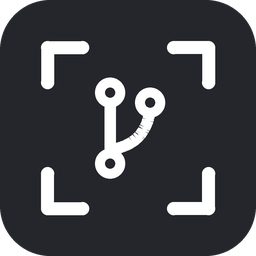
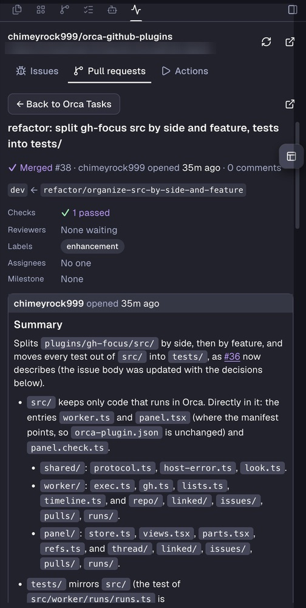
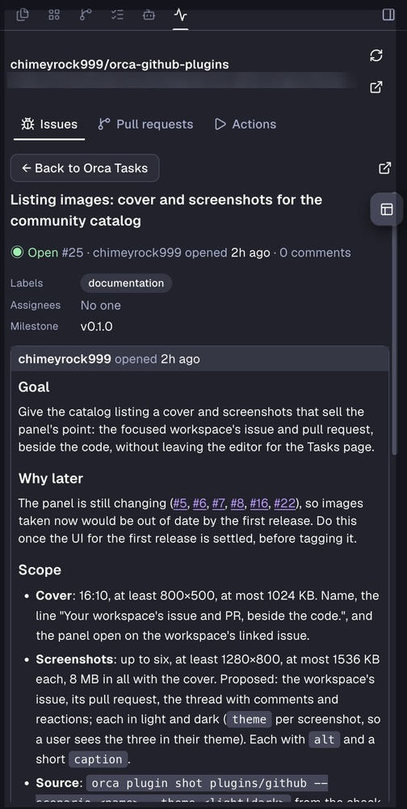

1600 × 1000 · 16:10 · catalog cover & README hero

Read, comment, review and rerun from Orca’s right sidebar. No tab switch to the Tasks page.


The two panel views are real captures from Orca: issue #25 and pull request #38
of this repo. The Actions card is drawn in CSS, since there is no capture of that tab yet. The cover keeps its layout at
any width; for the catalog it is exported at 1600 × 1000.